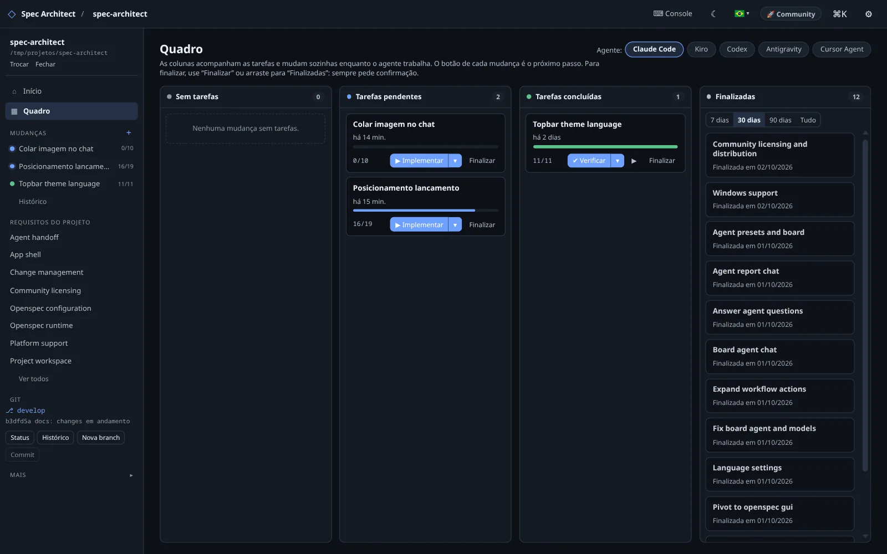

A IA não vai substituir os programadores.
Vai substituir quem só sabe pedir pra IA.
Compatível com projetos OpenSpec: abra qualquer pasta openspec/ e conduza seus agentes de IA por proposta, especificação, tarefas e arquivamento.
Tony Stark tem o JARVIS — mas ele nunca pede nada do nada. Ele domina especificações técnicas, tolerâncias milimétricas, física e pura cognição antes de mandar a máquina construir a armadura. O Spec Architect é a sua bancada de engenharia: você dita as especificações e contratos técnicos; os agentes de IA executam o trabalho braçal com precisão cirúrgica.

O Que o Desenvolvimento Orientado a Especificações RESOLVE de Verdade?
Se alguém te perguntar por que essa metodologia importa, o argumento definitivo é o que ela resolve na prática:
O "Loop do Prompt Infinito"
A "Amnésia" e Alucinação da IA
O Abismo entre Ideia e Engenharia
"Tony Stark não faz 'vibe coding' com o JARVIS. Ele chega com especificações técnicas milimétricas, modelos matemáticos e pura cognição antes de mandar a máquina construir. No desenvolvimento moderno, o verdadeiro superpoder não é digitar código nem debugar prompts no escuro: é ser o arquiteto que dita as regras do jogo."
A Diferença Entre Prompting Cego e SDD
Vibe coding funciona em brinquedos descartáveis. Software sério de produção exige limites formais e rastreabilidade.
Prompt-and-Pray (Vibecoding)
- Deriva de Contexto: O agente perde a linha lógica na 4ª iteração e regride código que já funcionava.
- Arquitetura Invisível: Decisões estruturais ficam soterradas no histórico do chat e nunca viram documentação.
- Refatorações Destrutivas: Mudanças isoladas quebram contratos implícitos do sistema sem aviso prévio.
- Ilusão de Conclusão: O código compila no console, mas viola regras de negócio fundamentais da empresa.
Spec-Driven Development (SDD)
- Contratos Vivos no Git: Especificações claras em Markdown/YAML evoluem lado a lado com a base de código.
- Handoff Determinístico: Agentes de IA recebem apenas tarefas atômicas com escopo restrito e critérios de aceite.
- Auditoria Antes do Código: Mudanças arquiteturais são propostas, debatidas e aprovadas antes de qualquer diff.
- Previsibilidade Absoluta: A IA obedece à especificação, reduzindo retrabalho e alucinações técnicas a zero.
O Pipeline SDD em 4 Etapas
Um fluxo sistemático de engenharia que substitui a tentativa-e-erro por precisão cirúrgica.
Propor & Explorar
Crie uma proposta de mudança (`proposal.md`), mapeie o impacto nas especificações existentes e defina o design arquitetural antes de escrever uma linha de código.
Especificação Viva
Formalize os requisitos funcionais, cenários de teste e deltas de spec. Seus documentos são versionados no Git e nunca ficam defasados da realidade.
Handoff de Agentes
Despache tarefas estruturadas diretamente para Claude Code, Codex, Cursor Agent, Kiro ou Antigravity com contexto isolado, sem poluir a memória do modelo.
Auditoria & Conclusão
Verifique a conformidade da implementação contra a especificação original, execute testes de invariantes e arquive a mudança com histórico completo.
Engenharia Sob o Capô
Construído com padrões industriais para desenvolvedores que exigem performance, segurança e soberania técnica.
Motor Embutido em Sandbox
O interpretador e o motor de execução vêm 100% integrados no instalador. Você não precisa instalar Node, npm ou pacotes globais para usar o app.
Tauri v2 + Rust Core
Interface desktop ultra-leve com consumo inferior a 90MB de RAM. Resposta em tempo real sem o peso e a lentidão de aplicativos baseados em Electron.
Resistente a Quebras Externas
Mesmo que ferramentas de terceiros atualizem comandos ou quebrem APIs globais na sua máquina, seu ambiente de especificações continua 100% estável.
Compatibilidade Multi-Agent
Suporte de primeira classe para Claude Code, Codex, Cursor Agent, Kiro e Antigravity com detecção automática de ambiente e histórico isolado.
100% Local-First & Git-Native
Nenhum código ou especificação é enviado para servidores proprietários. Seus arquivos residem estritamente no seu disco e no seu controle de versão.
Arquitetura Desacoplada
A camada de visualização é isolada do motor de execução, permitindo evolução e substituição transparente de motores no futuro sem afetar o fluxo do usuário.
Instale o Spec Architect
Binários autocontidos com verificação criptográfica SHA-256 incluída.
O Spec Architect organiza as especificações e entrega as tarefas a um agente de IA — quem escreve o código é o agente, rodando no console do app. Instale um destes antes de usar:
- Claude Code
claude - Codex
codex - Cursor Agent
cursor-agent - Kiro
kiro-cli - Antigravity
agy
Node.js e a CLI do OpenSpec não são necessários: já vêm dentro do app. Git é opcional (habilita o painel de alterações).
Binários oficiais para distribuições baseadas em Debian, Ubuntu, Fedora e Arch Linux.
Windows 10 e 11 (64 bits). Instale sem precisar de administrador, ou use a versão portátil: extraia e execute.
O executável ainda não é assinado: na primeira execução o Windows SmartScreen avisa. Clique em Mais informações → Executar assim mesmo.
Gostou? Deixe uma estrela no GitHub
É grátis, leva um clique e é o que mais ajuda o Spec Architect a chegar a mais gente.
⭐ Dar estrela no GitHub☕ Café dos finais de semana 100% voluntário
O Spec Architect é um projeto livre e independente, feito nos finais de semana. Se ele te ajuda e você quiser apoiar a continuidade, um Pix de qualquer valor mantém o café quente nos sábados e domingos de código.
fotofacil20@gmail.com